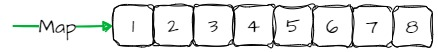
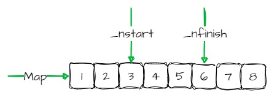
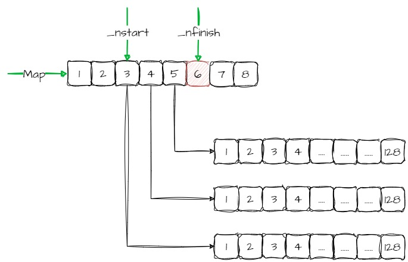

Base¶
template <class _Tp, class _Alloc>
class _Deque_base {
public:
typedef _Deque_iterator<_Tp,_Tp&,_Tp*> iterator;
typedef _Deque_iterator<_Tp,const _Tp&,const _Tp*> const_iterator;
typedef _Alloc allocator_type;
allocator_type get_allocator() const { return allocator_type(); }
_Deque_base(const allocator_type&, size_t __num_elements)
: _M_map(0), _M_map_size(0), _M_start(), _M_finish() {
_M_initialize_map(__num_elements);
}
_Deque_base(const allocator_type&)
: _M_map(0), _M_map_size(0), _M_start(), _M_finish() {}
~_Deque_base();
protected:
void _M_initialize_map(size_t);
void _M_create_nodes(_Tp** __nstart, _Tp** __nfinish);
void _M_destroy_nodes(_Tp** __nstart, _Tp** __nfinish);
enum { _S_initial_map_size = 8 };
protected:
_Tp** _M_map;
size_t _M_map_size;
iterator _M_start;
iterator _M_finish;
typedef simple_alloc<_Tp, _Alloc> _Node_alloc_type;
typedef simple_alloc<_Tp*, _Alloc> _Map_alloc_type;
_Tp* _M_allocate_node()
{ return _Node_alloc_type::allocate(__deque_buf_size(sizeof(_Tp))); }
void _M_deallocate_node(_Tp* __p)
{ _Node_alloc_type::deallocate(__p, __deque_buf_size(sizeof(_Tp))); }
_Tp** _M_allocate_map(size_t __n)
{ return _Map_alloc_type::allocate(__n); }
void _M_deallocate_map(_Tp** __p, size_t __n)
{ _Map_alloc_type::deallocate(__p, __n); }
};
_M_initialize_map¶
template <class _Tp, class _Alloc>
void
_Deque_base<_Tp,_Alloc>::_M_initialize_map(size_t __num_elements)
{
size_t __num_nodes =
__num_elements / __deque_buf_size(sizeof(_Tp)) + 1;
_M_map_size = max((size_t) _S_initial_map_size, __num_nodes + 2);
_M_map = _M_allocate_map(_M_map_size);
_Tp** __nstart = _M_map + (_M_map_size - __num_nodes) / 2;
_Tp** __nfinish = __nstart + __num_nodes;
__STL_TRY {
_M_create_nodes(__nstart, __nfinish);
}
__STL_UNWIND((_M_deallocate_map(_M_map, _M_map_size),
_M_map = 0, _M_map_size = 0));
_M_start._M_set_node(__nstart);
_M_finish._M_set_node(__nfinish - 1);
_M_start._M_cur = _M_start._M_first;
_M_finish._M_cur = _M_finish._M_first +
__num_elements % __deque_buf_size(sizeof(_Tp));
}
Example¶
deque<int,258> deque1;
首先计算出需要的节点个数
size_t __num_nodes =
__num_elements / __deque_buf_size(sizeof(_Tp)) + 1;
_num_elements = 258
__deque_buf_size(sizeof(_Tp)) = 128
__num_nodes = 258/128 + 1 = 3
please refer to __deque_buf_size
计算出map的大小，并初始化
_M_map_size = max((size_t) _S_initial_map_size, __num_nodes + 2);
_M_map = _M_allocate_map(_M_map_size);
_M_map_size = 8
计算出map的起始和结束地址
_Tp** __nstart = _M_map + (_M_map_size - __num_nodes) / 2;
_Tp** __nfinish = __nstart + __num_nodes;
__nstart = _M_map + (8-3)/2 = _M_map + 2
__nfinish = __nstart + 3 = _M_map + 5
初始化所有的node节点，map是一个TP**,相当于一个二维数组
__STL_TRY {
_M_create_nodes(__nstart, __nfinish);
}
please refer to _M_create_nodes
设置迭代器,_M_start和_M_finish是两个迭代器
_M_start._M_set_node(__nstart);
_M_finish._M_set_node(__nfinish - 1);
_M_start._M_cur = _M_start._M_first;
_M_finish._M_cur = _M_finish._M_first +
__num_elements % __deque_buf_size(sizeof(_Tp));
__deque_buf_size¶
// Note: this function is simply a kludge to work around several compilers'
// bugs in handling constant expressions.
inline size_t __deque_buf_size(size_t __size) {
return __size < 512 ? size_t(512 / __size) : size_t(1);
}
_M_create_nodes¶
template <class _Tp, class _Alloc>
void _Deque_base<_Tp,_Alloc>::_M_create_nodes(_Tp** __nstart, _Tp** __nfinish)
{
_Tp** __cur;
__STL_TRY {
for (__cur = __nstart; __cur < __nfinish; ++__cur)
*__cur = _M_allocate_node();
}
__STL_UNWIND(_M_destroy_nodes(__nstart, __cur));
}